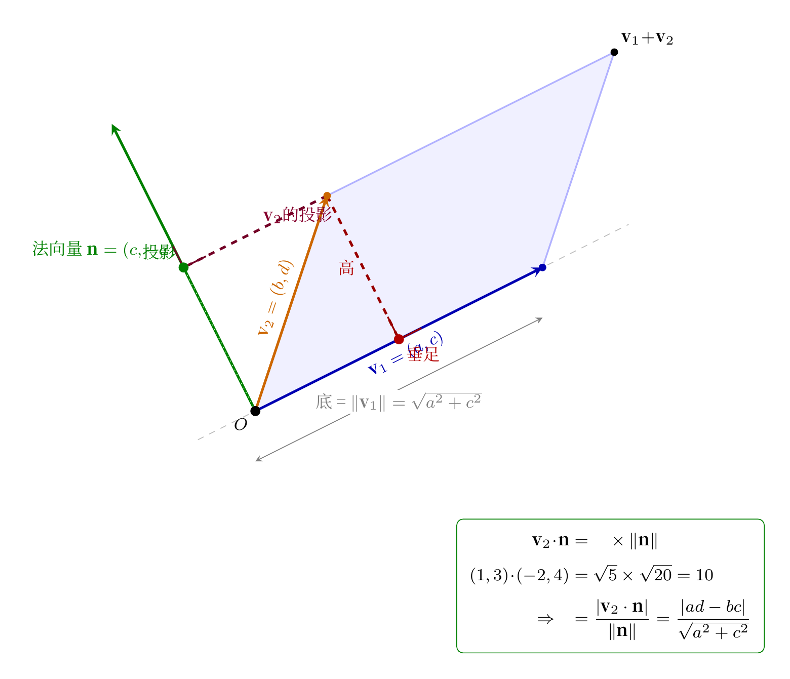

00-01 学过：矩阵是一本"操作手册"——把一个向量扭成另一个向量。现在把这个想法放大：矩阵不只是扭一个箭头，它扭的是整个空间。
画面： 想象桌面上铺了一张方格坐标纸。矩阵 $A$ 就是一只无形的手——它把整张纸抓住，扯一扯、扭一扭。纸上的每个点都被拉到了新位置。
我们来看矩阵 $A = \begin{bmatrix} 2 & 1 \\ 0 & 1 \end{bmatrix}$ 对空间做了什么。取四个特殊点——单位正方形的四个角：
$$ (0,0) \rightarrow (0,0) \qquad (1,0) \rightarrow (2,0) \qquad (0,1) \rightarrow (1,1) \qquad (1,1) \rightarrow (3,1) $$正方形被推歪了，变成了一个平行四边形。原来的面积是 1，现在的面积是多少？这就是行列式要回答的问题。
画面： 矩阵把单位正方形（面积=1）扭成了平行四边形。行列式 $\det(A)$ 就是这个平行四边形的面积——也就是面积放大了几倍。
对 2×2 矩阵 $\begin{bmatrix} a & b \\ c & d \end{bmatrix}$：
$$\det(A) = ad - bc$$把矩阵的两列看作两个向量：
$$\mathbf{v}_1 = \begin{bmatrix} a \\ c \end{bmatrix}, \quad \mathbf{v}_2 = \begin{bmatrix} b \\ d \end{bmatrix}$$矩阵作用在单位正方形上：第一列 $\mathbf{v}_1$ 就是原来 $(1,0)$ 被扭到的新位置，第二列 $\mathbf{v}_2$ 就是原来 $(0,1)$ 被扭到的新位置。所以变换后的平行四边形 就是 $\mathbf{v}_1$ 和 $\mathbf{v}_2$ 张成的平行四边形。
怎么求这个平行四边形的面积？底 × 高。
第 1 步——底： 以 $\mathbf{v}_1$ 为底。$\mathbf{v}_1 = (a, c)$，底长 = $\sqrt{a^2 + c^2}$（勾股定理，00-01 学过）。
第 2 步——高： 要算高，就得求 $\mathbf{v}_2$ 的终点 $(b, d)$ 到 $\mathbf{v}_1$ 所在直线的垂直距离。这需要几个小步：
$\mathbf{v}_1 = (a, c)$ 本身就是直线的方向向量——它从原点指向 $(a, c)$，沿这个方向延伸就得到整条直线。
法向量是与方向向量垂直的向量。要找与 $(a, c)$ 垂直的向量，一个非常方便的方法是：交换坐标，并在其中一个前面加个负号：
$$\mathbf{n} = (c, -a)$$
验证——点积为 0：$\mathbf{n} \cdot \mathbf{v}_1 = c \cdot a + (-a) \cdot c = ac - ac = 0$。确实垂直。也可以取 $(-c, a)$，效果一样，这里用 $(c, -a)$。
直线过原点，法向量为 $\mathbf{n} = (c, -a)$。怎么用"法向量"写出直线方程？
关键想法： 直线上的任意一点 $(x, y)$，从原点指向它的向量 $(x, y)$ 与方向向量 $\mathbf{v}_1 = (a, c)$ 平行。而法向量 $\mathbf{n}$ 与 $\mathbf{v}_1$ 垂直——所以 $(x, y)$ 也与 $\mathbf{n}$ 垂直，即它们的点积为 0：
$$(x, y) \cdot (c, -a) = 0 \;\Longrightarrow\; c \cdot x + (-a) \cdot y = 0 \;\Longrightarrow\; cx - ay = 0$$
这就是 $\mathbf{v}_1$ 所在直线的方程。没有常数项——因为直线过原点。
现在要算点 $P(b, d)$ 到直线 $cx - ay = 0$ 的距离。
几何直觉（投影）： 点到直线的距离，等于从直线上任意一点到 $P$ 的向量，在法向量方向上的投影长度。因为法向量垂直于直线，沿这个方向量的长度就是纯粹"离开直线的垂直距离"。
取直线上最简单的点——原点 $O(0, 0)$（因为直线过原点）。从 $O$ 到 $P$ 的向量就是 $\overrightarrow{OP} = (b, d)$。
点积 = 投影长 × 向量长： 这是内积最核心的几何含义。向量 $\mathbf{u}$ 与 $\mathbf{n}$ 的点积，等于 $\mathbf{u}$ 在 $\mathbf{n}$ 上的投影长度乘以 $\mathbf{n}$ 的自身长度：
$$\mathbf{u} \cdot \mathbf{n} = (\text{投影长}) \times \|\mathbf{n}\|$$代具体数字一目了然：$\mathbf{v}_2 = (1,3)$，法向量 $\mathbf{n} = (-2,4)$：
$$\mathbf{v}_2 \cdot \mathbf{n} = 1 \times (-2) + 3 \times 4 = 10$$ $$\|\mathbf{n}\| = \sqrt{(-2)^2 + 4^2} = \sqrt{20},\quad \text{投影长} = \sqrt{5}$$ $$\text{验证：} \sqrt{5} \times \sqrt{20} = \sqrt{100} = 10$$所以投影长度 = |点积| ÷ 向量长度——把点积反过来解：
一个向量 $\mathbf{u}$ 在另一个向量 $\mathbf{n}$ 方向上的投影长度 = $\dfrac{|\mathbf{u} \cdot \mathbf{n}|}{\|\mathbf{n}\|}$（00-02 学过——内积的几何含义）。
代入：
$$\begin{aligned} \text{距离} &= \frac{|(b, d) \cdot (c, -a)|}{\sqrt{c^2 + (-a)^2}} \\[4pt] &= \frac{|b \cdot c + d \cdot (-a)|}{\sqrt{c^2 + a^2}} \\[4pt] &= \frac{|cb - ad|}{\sqrt{a^2 + c^2}} \end{aligned}$$
分子变形： $|cb - ad| = |-(ad - bc)| = |ad - bc|$（绝对值内加负号不改变大小）。
所以：
$$\text{高} = \frac{|ad - bc|}{\sqrt{a^2 + c^2}}$$
（分子取绝对值——距离非负。分母 $\sqrt{a^2 + c^2}$ 是法向量的长度，也正好等于底 $\mathbf{v}_1$ 的长度——因为 $\|\mathbf{v}_1\| = \sqrt{a^2 + c^2}$。）
$$\text{面积} = \cancel{\sqrt{a^2 + c^2}} \cdot \frac{|ad - bc|}{\cancel{\sqrt{a^2 + c^2}}} = |ad - bc|$$
两个根号恰好消掉！ $ad-bc$ 自然出现，不是硬凑的公式。整个推导只用到了：向量垂直（点积为 0）、点到直线距离的投影公式——都是从 00-01、00-02 就学过的基础知识。

符号的含义： 去掉绝对值，$ad - bc$ 的正负号表示 $\mathbf{v}_1$ 到 $\mathbf{v}_2$ 的旋转方向——逆时针为正（$ad-bc > 0$），顺时针为负（$ad-bc < 0$）。所以行列式是有向面积。
减掉：$(ac + ad + bc + bd) - (ac + 2bc + bd) = ad - bc$。多余部分恰好消掉，剩下 $ad-bc$。两种方法殊途同归：底×高最快，矩形减法最直观。
刚才那个矩阵：$\det = 2\times1 - 1\times0 = 2$。面积放大了 2 倍。
行列式 = 0 意味着什么？正方形成了一条线——面积=0，信息丢了一维。行列式 = 负数 意味着空间被翻转了（像把纸翻到背面）。
2×2 矩阵两列是两个向量，张成一个平行四边形——行列式 = 面积。3×3 矩阵三列是三个向量：
$$\mathbf{v}_1 = \begin{bmatrix} a_{11} \\ a_{21} \\ a_{31} \end{bmatrix},\quad \mathbf{v}_2 = \begin{bmatrix} a_{12} \\ a_{22} \\ a_{32} \end{bmatrix},\quad \mathbf{v}_3 = \begin{bmatrix} a_{13} \\ a_{23} \\ a_{33} \end{bmatrix}$$这三个向量张成一个平行六面体（一个被"推歪了"的立方体）。行列式 = 这个平行六面体的有向体积——空间被放大了几倍。
怎么算这个体积？ 把三维体积拆成二维面积的组合。
画面： 把 $\mathbf{v}_2$ 和 $\mathbf{v}_3$ 先投影到某个坐标平面上（比如 yz 平面），算它们在那张平面上的投影面积的 2D 行列式。然后用 $\mathbf{v}_1$ 在这个平面垂直方向上的分量做"高度"。三张坐标平面各贡献一部分，加起来就是总体积。
具体来说——沿第一列展开（把 $\mathbf{v}_1$ 按分量拆开）：
$$\det(A) = a_{11}\begin{vmatrix}a_{22}&a_{23}\\a_{32}&a_{33}\end{vmatrix} - a_{21}\begin{vmatrix}a_{12}&a_{13}\\a_{32}&a_{33}\end{vmatrix} + a_{31}\begin{vmatrix}a_{12}&a_{13}\\a_{22}&a_{23}\end{vmatrix}$$每一项的含义：
| 项 | $\mathbf{v}_1$ 的分量 | 2×2 子式 | 含义 |
|---|---|---|---|
| $a_{11} \cdot \begin{vmatrix}a_{22}&a_{23}\\a_{32}&a_{33}\end{vmatrix}$ | $\mathbf{v}_1$ 的 x 分量 | $\mathbf{v}_2,\mathbf{v}_3$ 的 yz 子块 | yz 平面的投影面积 × x 方向的高度 |
| $-a_{21} \cdot \begin{vmatrix}a_{12}&a_{13}\\a_{32}&a_{33}\end{vmatrix}$ | $\mathbf{v}_1$ 的 y 分量 | $\mathbf{v}_2,\mathbf{v}_3$ 的 xz 子块 | xz 平面的投影面积 × y 方向的高度 （前面有个负号——$\mathbf{e}_2$ 跨到第二列需换一次，符号翻转） |
| $+a_{31} \cdot \begin{vmatrix}a_{12}&a_{13}\\a_{22}&a_{23}\end{vmatrix}$ | $\mathbf{v}_1$ 的 z 分量 | $\mathbf{v}_2,\mathbf{v}_3$ 的 xy 子块 | xy 平面的投影面积 × z 方向的高度 （$\mathbf{e}_3$ 跨两次，负负得正） |
|
注意这个公式里用的是 $a_{11}, a_{21}, a_{31}$——都是第一列的元素。 下面就用行列式的三条基本性质，一步步证明为什么这个公式成立（而不是死记）。
行列式有三个基本性质，它们完全决定了降阶展开的公式：
第 1 步——利用线性性质拆开第一列：
$\mathbf{v}_1$ 可以写成三个标准基向量的组合：
$$\mathbf{v}_1 = \begin{bmatrix} a_{11} \\ a_{21} \\ a_{31} \end{bmatrix} = a_{11}\begin{bmatrix} 1 \\ 0 \\ 0 \end{bmatrix} + a_{21}\begin{bmatrix} 0 \\ 1 \\ 0 \end{bmatrix} + a_{31}\begin{bmatrix} 0 \\ 0 \\ 1 \end{bmatrix} = a_{11}\mathbf{e}_1 + a_{21}\mathbf{e}_2 + a_{31}\mathbf{e}_3$$性质 3 说：行列式对每一列都是线性的——有两层意思：
现在把 $\mathbf{v}_1 = a_{11}\mathbf{e}_1 + a_{21}\mathbf{e}_2 + a_{31}\mathbf{e}_3$ 代入行列式的第一列，先拆加法、再提倍数：
$$\begin{aligned} \det(A) &= \det(a_{11}\mathbf{e}_1 + a_{21}\mathbf{e}_2 + a_{31}\mathbf{e}_3,\; \mathbf{v}_2,\; \mathbf{v}_3) \\ &= \det(a_{11}\mathbf{e}_1, \mathbf{v}_2, \mathbf{v}_3) + \det(a_{21}\mathbf{e}_2, \mathbf{v}_2, \mathbf{v}_3) + \det(a_{31}\mathbf{e}_3, \mathbf{v}_2, \mathbf{v}_3) \quad \text{← 拆加法：三项之和拆成三个行列式} \\ &= a_{11}\det(\mathbf{e}_1, \mathbf{v}_2, \mathbf{v}_3) + a_{21}\det(\mathbf{e}_2, \mathbf{v}_2, \mathbf{v}_3) + a_{31}\det(\mathbf{e}_3, \mathbf{v}_2, \mathbf{v}_3) \quad \text{← 提倍数：系数提到外面} \end{aligned}$$三项都在，一个不少。 现在每项里面是一个基向量 + $\mathbf{v}_2$ + $\mathbf{v}_3$ 的行列式，比原来简单了。
三项分别是 $\mathbf{v}_1$ 的x、y、z 分量各自贡献的体积。每一项目己就是一个体积：比如 $a_{21}\det(\mathbf{e}_2, \mathbf{v}_2, \mathbf{v}_3)$ = 以 $\mathbf{v}_2,\mathbf{v}_3$ 在 xz 平面的投影面积（2×2 行列式）为底、$a_{21}$（$\mathbf{v}_1$ 的 y 分量）为高的一个斜方体。三个底 × 高拼起来 = 总体积。这回答了"为什么三部分加起来就是总体积"——线性性质把总体积拆成了三个独立的小体积，像把一块积木切成三片。
第 2 步——行交换：把每一项变成 $\mathbf{e}_1$ 的形式
上面三项里，第一项 $\det(\mathbf{e}_1, \mathbf{v}_2, \mathbf{v}_3)$ 最简单——$\mathbf{e}_1 = [1,0,0]^T$ 已经在第一列，沿第一列展开时下面两个 $0$ 杀掉多余 cofactor，直接得：
$$\det(\mathbf{e}_1, \mathbf{v}_2, \mathbf{v}_3) = \begin{vmatrix}a_{22}&a_{23}\\a_{32}&a_{33}\end{vmatrix}$$对另外两项，技巧是交换行，把第一列也变成 $[1,0,0]^T$——这样就回到了 $\mathbf{e}_1$ 的情况，只是多一个行交换的符号。
对 $\det(\mathbf{e}_2, \mathbf{v}_2, \mathbf{v}_3)$： $\mathbf{e}_2 = [0,1,0]^T$ 在第一列，它的 "$1$" 在第 2 行。
$$\det\begin{pmatrix}0&a_{12}&a_{13}\\1&a_{22}&a_{23}\\0&a_{32}&a_{33}\end{pmatrix}$$交换第 1 行和第 2 行（行列式变号，性质 2）：
$$-\;\det\begin{pmatrix}1&a_{22}&a_{23}\\0&a_{12}&a_{13}\\0&a_{32}&a_{33}\end{pmatrix}$$看！ 交换后第一列变成了 $[1,0,0]^T$——和 $\mathbf{e}_1$ 的情况完全一样。沿第一列展开，$0$ 杀掉多余项：
$$= -\begin{vmatrix}a_{12}&a_{13}\\a_{32}&a_{33}\end{vmatrix}$$行交换一次 → 一个负号。干净利落。
对 $\det(\mathbf{e}_3, \mathbf{v}_2, \mathbf{v}_3)$： $\mathbf{e}_3 = [0,0,1]^T$，它的 "$1$" 在第 3 行。
$$\det\begin{pmatrix}0&a_{12}&a_{13}\\0&a_{22}&a_{23}\\1&a_{32}&a_{33}\end{pmatrix}$$要把第 3 行的 $1$ 挪到第 1 行，并且保持 $\mathbf{v}_2, \mathbf{v}_3$ 的顺序不变——换两次行：先换 2↔3，再换 1↔2。
$$\det\begin{pmatrix}0&a_{12}&a_{13}\\0&a_{22}&a_{23}\\1&a_{32}&a_{33}\end{pmatrix} \;\xrightarrow{\text{换 2↔3，变号}}\; -\det\begin{pmatrix}0&a_{12}&a_{13}\\1&a_{32}&a_{33}\\0&a_{22}&a_{23}\end{pmatrix} \;\xrightarrow{\text{换 1↔2，再变号}}\; (-1)\cdot(-1)\det\begin{pmatrix}1&a_{32}&a_{33}\\0&a_{12}&a_{13}\\0&a_{22}&a_{23}\end{pmatrix}$$两次交换 → 负负得正。第一列变成 $[1,0,0]^T$，和 $\mathbf{e}_1$ 的情况完全一样！
$$= +\begin{vmatrix}a_{12}&a_{13}\\a_{22}&a_{23}\end{vmatrix}$$干净利落——两次行交换，直接得到 $+M_{31}$。
三项全部用 $\mathbf{e}_1$ 的套路解决了。
汇总——三项拼回总体积：
$$\begin{aligned} \det(A) &= a_{11} \cdot (+\begin{vmatrix}a_{22}&a_{23}\\a_{32}&a_{33}\end{vmatrix}) \quad \text{← x 分量，yz 平面投影面积} \\ &+ a_{21} \cdot (-\begin{vmatrix}a_{12}&a_{13}\\a_{32}&a_{33}\end{vmatrix}) \quad \text{← y 分量，xz 平面投影面积（行交换 1 次→符号：}(-1)^1=-1\text{（棋盘格 }(-1)^{2+1}=-1\text{）}\text{）} \\ &+ a_{31} \cdot (+\begin{vmatrix}a_{12}&a_{13}\\a_{22}&a_{23}\end{vmatrix}) \quad \text{← z 分量，xy 平面投影面积（行交换 2 次→符号：}(-1)^2=+1\text{（棋盘格 }(-1)^{3+1}=+1\text{）}\text{）} \end{aligned}$$这就是沿第一列展开的公式。 整个推导没有引入任何新规则——只是把 $\mathbf{v}_1$ 拆成三个分量，每项通过行交换变成 $\mathbf{e}_1$ 的形式，符号由交换次数决定（换一次变号，两次负负得正）。每一步都在做"体积 = 底面积 × 高度"，只是换了一个坐标系来量。
走一个例子——换沿第一行展开试试（推导证明的是第一列，但任意行/列结果一样）：
$$A = \begin{bmatrix} 1 & 2 & 3 \\ 4 & 5 & 6 \\ 7 & 8 & 9 \end{bmatrix}$$沿第一行展开：
$$\begin{aligned} \det(A) &= 1 \cdot \begin{vmatrix}5&6\\8&9\end{vmatrix} - 2 \cdot \begin{vmatrix}4&6\\7&9\end{vmatrix} + 3 \cdot \begin{vmatrix}4&5\\7&8\end{vmatrix} \\[8pt] &= 1 \cdot (5\cdot9 - 6\cdot8) - 2 \cdot (4\cdot9 - 6\cdot7) + 3 \cdot (4\cdot8 - 5\cdot7) \\[8pt] &= 1 \cdot (-3) - 2 \cdot (-6) + 3 \cdot (-3) \\[8pt] &= -3 + 12 - 9 = 0 \end{aligned}$$行列式 = 0！这意味着矩阵把三维空间压扁了——三个向量躺在同一张平面上，体积 = 0。实际上第三行 = 第二行 × 2 − 第一行，三行不独立。
4×4 降成 3×3（四个 3×3 行列式），每个 3×3 再降成 2×2……一层层拆下去，最终全是 $ad-bc$ 的组合。降阶展开是行列式三条基本性质的直接推论——不是凭空定义的算法。
递归总结： n×n 行列式 = 沿任一行展开的 n 个 (n−1)×(n−1) 行列式的带符号和。一路递归到 2×2 的 $ad-bc$ 为止。每一步都是在做"体积 = 底面积 × 高度"的推广。
# 导入numpy科学计算库，别名np
import numpy as np
# np.array(嵌套列表) → 创建3×3矩阵
A = np.array([[1, 2, 3],
# 第1行: [4,5,6]
[4, 5, 6],
# 第2行: [7,8,9]，注意第2行=第1行×2-第0行，三行不独立
[7, 8, 9]])
# 手算验证：沿第一行展开 det = a₁₁·M₁₁ - a₁₂·M₁₂ + a₁₃·M₁₃
# M₁₁ = 5×9-6×8 = 45-48 = -3 (划掉第0行第0列后的2×2行列式)
# M₁₂ = 4×9-6×7 = 36-42 = -6 (划掉第0行第1列后的2×2行列式)
# M₁₃ = 4×8-5×7 = 32-35 = -3 (划掉第0行第1列后的2×2行列式)
det_manual = 1*(5*9 - 6*8) - 2*(4*9 - 6*7) + 3*(4*8 - 5*7) # 手算: 1·(-3) - 2·(-6) + 3·(-3)
# = -3 + 12 - 9 = 0
# 输出: 手算行列式: 0
print(f"手算行列式: {det_manual}")
# np.linalg.det()：计算任意方阵的行列式，内部用LU分解，比降阶展开更高效
# :.0f=取整显示 → 输出: 0
print(f"np.linalg.det: {np.linalg.det(A):.0f}")
# 行列式=0 → 矩阵把三维空间压扁了，三个列向量共面，体积为0